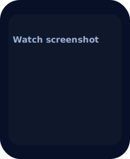

⌚ WatchOS — Fast-Start Control Surface
The Watch companion is a fast-start control surface: start and stop drills, feel countdowns and PAR warnings, and glance at shot counts without touching your phone.

Features
- Haptics first: 3-2-1 countdown, PAR warnings, and drill complete signals you can feel.
- Motion start: Draw-motion detection kicks off timing when you clear leather—no taps required.
- Quick stats: Shot count, cadence, and timer state at a glance; complication/Live Activity launches your preset.
- Heart rate awareness: Track HR across drills to see how stress shifts your splits.
- Offline capable: Run from the wrist alone; the session syncs back to iPhone/iPad when you reconnect.
How to run from the wrist
Launch from the complication, feel the haptic countdown, run the drill, and stop on the watch. If BLE is out of range, the watch keeps logging; your phone pulls the data once you’re back near it.
Compatibility
Built for modern Apple Watch hardware running recent watchOS releases.
Convenience at Your Wrist
At the range or in the garage, you can launch drills, feel cues, and check stats without pulling out your phone. Your training history stays in sync once devices are back together.